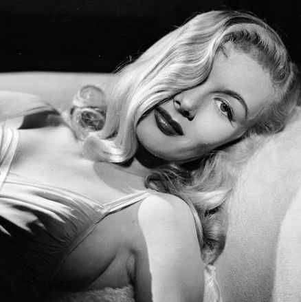

Veronica Lake was born in Brooklyn, New York on November 14, 1922 as Constance Frances Marie Ockleman. Her father worked for an oil company as a ship employee.
When Connie was only 12, tragedy struck when her father died in an explosion on an oil ship. One year later her mother married Anthony Keane and Connie took his last name as her own. In 1934, when her stepfather was diagnosed with tuberculosis, the family moved to Saranac Lake, where Connie Keane enjoyed the outdoor life and flourished in the activities of boating on the lakes, skating, skiing, swimming, biking around Moody pond and hiking up Mt Baker. The family made their home in 1935 at 1 Watson Place, (now 27 Seneca Street) then they moved to 1 Riverside Drive,(now Lake Kiwassa Road). Both Connie and Anthony benefited from the Adirondack experience and in 1936 the family left the Adirondacks and moved to Miami, FL., however, the memories of those carefree Saranac Lake days would always remain deeply rooted in her mind.
Two years later, Connie graduated from high school in Miami. Her natural beauty and charm and a definite talent for acting prompted her mother and step-father to move to Beverly Hills, California, where they enrolled her in the well known Bliss Hayden School of Acting in Hollywood. She showed remarkable abilities and didn't have to wait long for a part to come her way. After several bit parts she changed her name to Veronica Lake.
Her films included: ‘This Gun for Hire’, ‘The Hour Before Dawn’, ‘Hold That Blonde’, and ‘Out of this World’ among others. Veronica was soon a big name star and her success in acting seemed unstoppable. After 1952, she would make only two more films.
Veronica's biography and other sources state that she went to visit friends in Vermont, however, this is inaccurate. For one thing, she had no friends in Vermont, and for another, she didn't go directly to Vermont but instead came to Saranac Lake to seek a cure for her Hepatitis, which had affected her for some time. Saranac Lake was the place where Connie Kean had spent the happiest years of her childhood, the village she had never forgotten, the place that had remained in her memories throughout her glamorous career. The memories of her happy, youthful days in the mountains and she wanted to relive the good days. She wanted to be healed, just as her stepfather had been many years ago but it was too late for her. She was beyond help. Connie Keane had come home to die.
According to the Saranac Lake doctors who treated her, she was already "pretty far along" with an acute case of hepatitis and she was not long in Saranac Lake before she was admitted to Will Rogers Hospital. According to her doctor in Vermont, Warren Beeken, Saranac Lake did not have the resources to treat her as well as the Medical Center in Burlington, so on June 26, 1973 she was transferred to the Fletcher Allen Hospital. Her presence in the hospital was not publicized- because, according to her publicist William Roos- "Frankly, I didn't think she was going to die". He was not aware of the extreme state of her medical condition. According to Dr. Beeken, her case of hepatitis had persisted for some time before she entered the Fletcher Allen Hospital, and her condition had deteriorated rapidly.
Word of her true identity quickly spread throughout the facility, and the hospital staff visited her room to pay their respects. She visibly brightened due to the attention, signing autographs for the nurses and speaking confidently of future plans. According to one nurse who attended her in her final days, "She was very cheerful and friendly, happy and looking forward to the future, and still retained her former beauty." Dr. Beeken looked in on her one last time on the evening on July 6, when acute renal failure had set in. Early on the morning of July 7, 1973, Constance Frances Marie Ockleman passed away at age of 50.